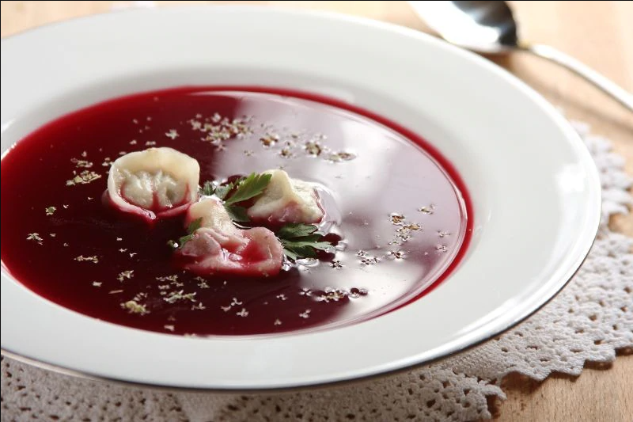
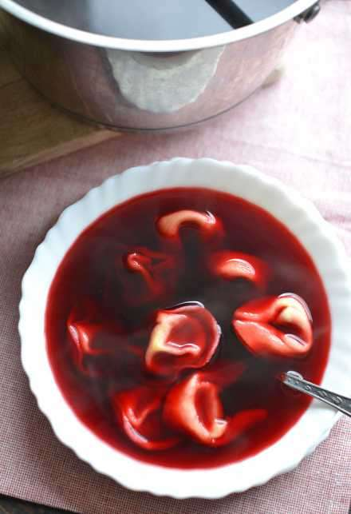
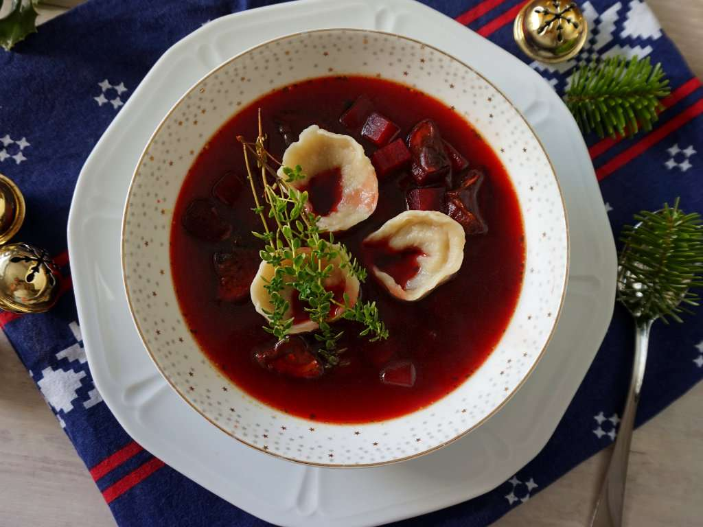

Barszcz z uszkami
Wigilijny barszcz z uszkami – specjalnie przygotowany barszcz czerwony z postnymi uszkami, będący tradycyjną polską zupą podawaną w czasie Wigilii Bożego Narodzenia. Barszcz wigilijny różni się od barszczu czerwonego przygotowywanego w ciągu roku.
Przepisy:


